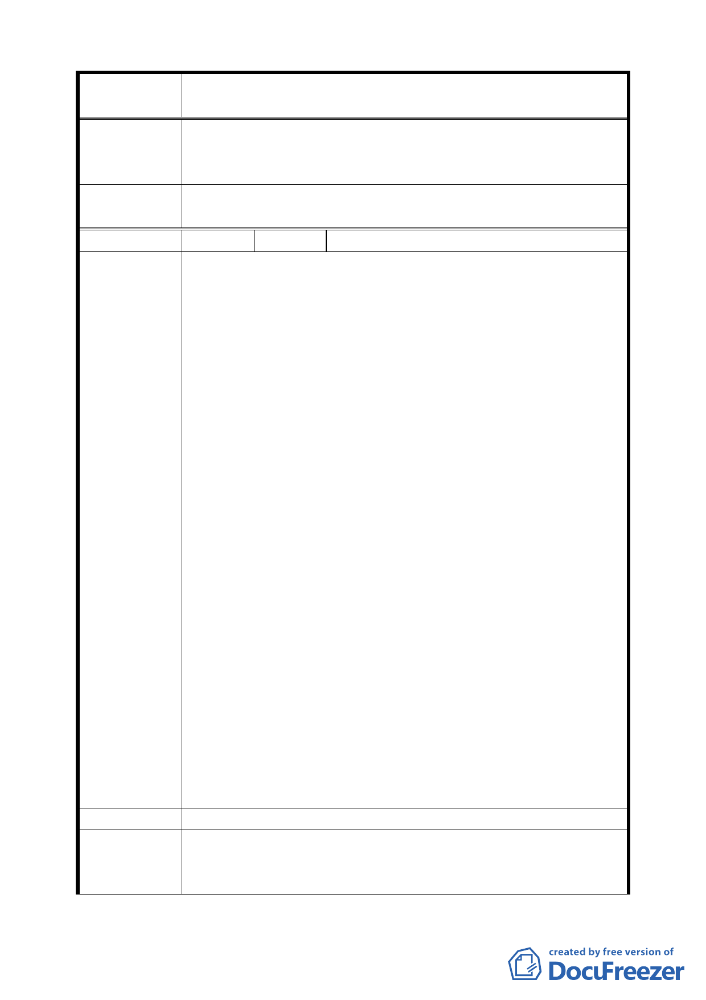

案 名 臺北市文山區都市計畫通盤檢討（細部計畫）案
專 案 小 組 考量交通之連貫性及惠生幼稚園之使用現況，變更公園用地
審 查 結 論 範圍調整為公訓段三小段 163、163-2、163-4、163-5、163-6、
（ 9 4 . 7 . 4 ） 163-7、163-8、164 地號等八筆土地。
委員會議
決議
依專案小組審查結論辦理，並修正本案「細木 2」計畫內容。
編 號 １７ 陳情人 國防部總政治作戰局（09430087200）
陳情位置：興隆路三段 225 巷（公訓段三小段 388、389 地號）
臺北市疏散營區。
陳情理由：
一、 臺北市「疏散營區」土地已納「國軍老舊眷村改建總冊
土地清冊」，並作價編列「國軍老舊眷村改建特別預
算」，於「國軍老舊眷村改建計畫」核列為標售處分之
標的，得款歲入上述特別預算，以利眷改業務之規定與
執行。
二、 「疏散營區」範圍內本局經管國有土地計有 19 筆，總
面積 2864 平方公尺，使用分區分別為住宅區及道路用
地，其中公訓段三小段 388、389 地號等筆住宅區土地，
面積計 795 平方公尺，本局已委請國有財產局辦理估價
陳情理由
標售事宜。
（ 細 木 3 ） 三、 當前「國軍老舊眷村改建基金」已嚴重短絀，國防部為
解決資金不足問題，爰於 93 年 6 月 2 日研擬「國軍老
舊眷村改建 93 年度融資需求計畫」（以下簡稱融資計
畫）陳報行政院，期能於 93、94 年度爭取融資額度 227
億元。案經行政院經濟建設委員會於 93 年 6 月 24 日及
7 月 23 日邀集有關機關審查融資計畫，並提 93 年 8 月
9 日第 1185 次委員會議，獲致結論之一如後：國防部
研議透過都市計畫變更等配套措施，提高國軍老舊眷村
改建處分土地價值，裨提升融資後自償能力。爰此，本
案如經貴市都市計畫委員會審議變更為「公園用地」，
除衝擊「國軍老舊眷村改建特別預算」結構外，亦直接
影響該等土地之標售處分及眷改自償能力，建請維持原
使用分區。
建 議 辦 法 為維護眷戶權益，建請維持使用分區為住宅區。
專案小組
審查結論
（94.7.4）
同意本案維持原公展方案，至於有償撥用事宜移請市府與軍
方協調處理。
三六